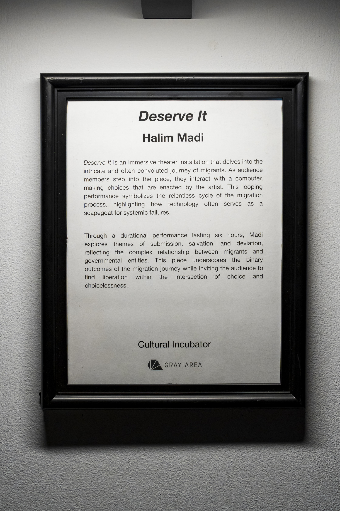
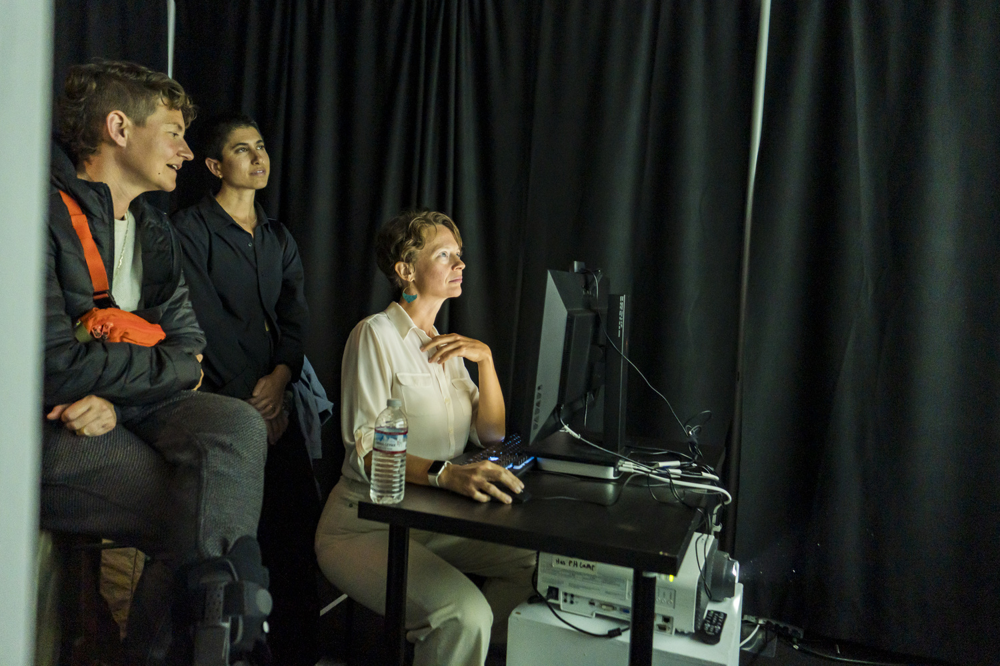
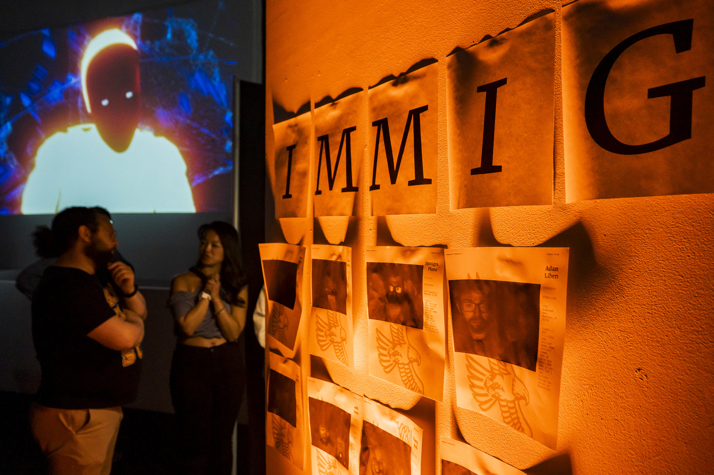
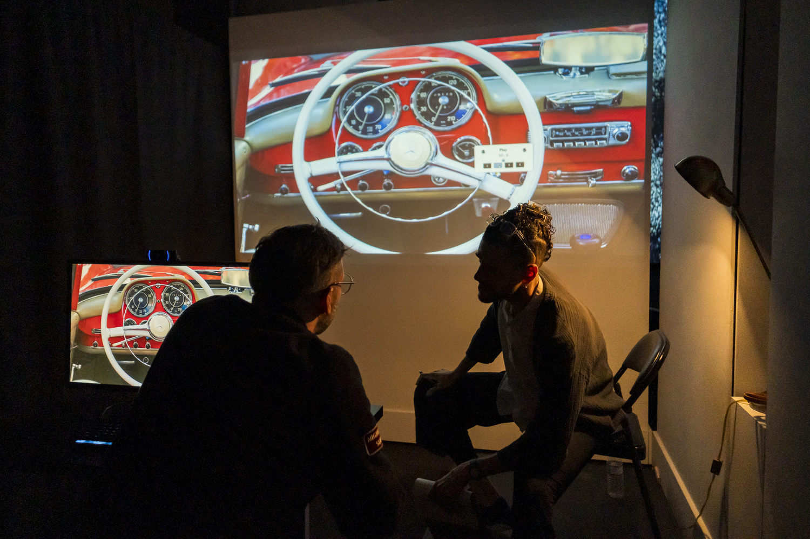
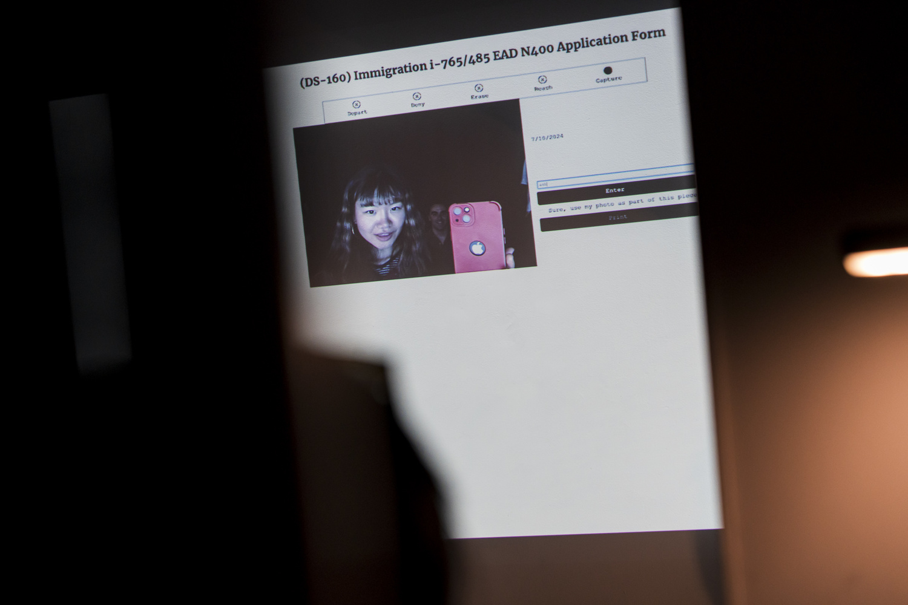
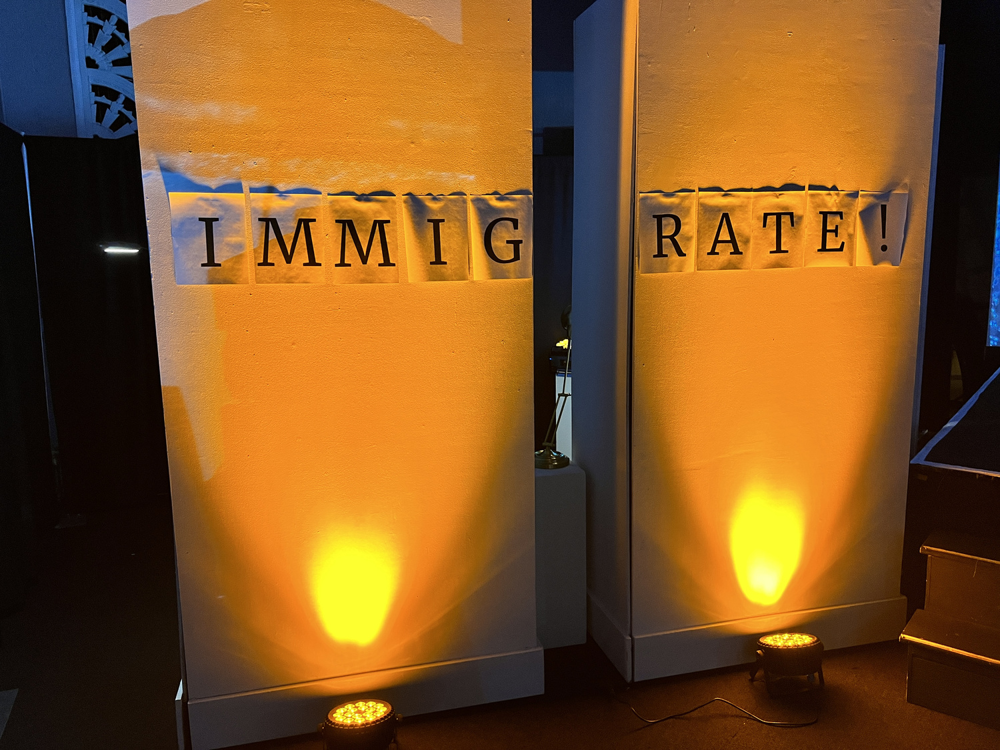
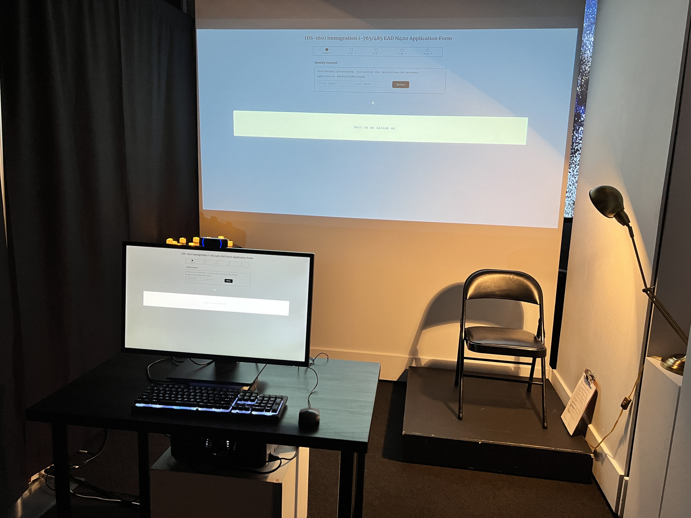
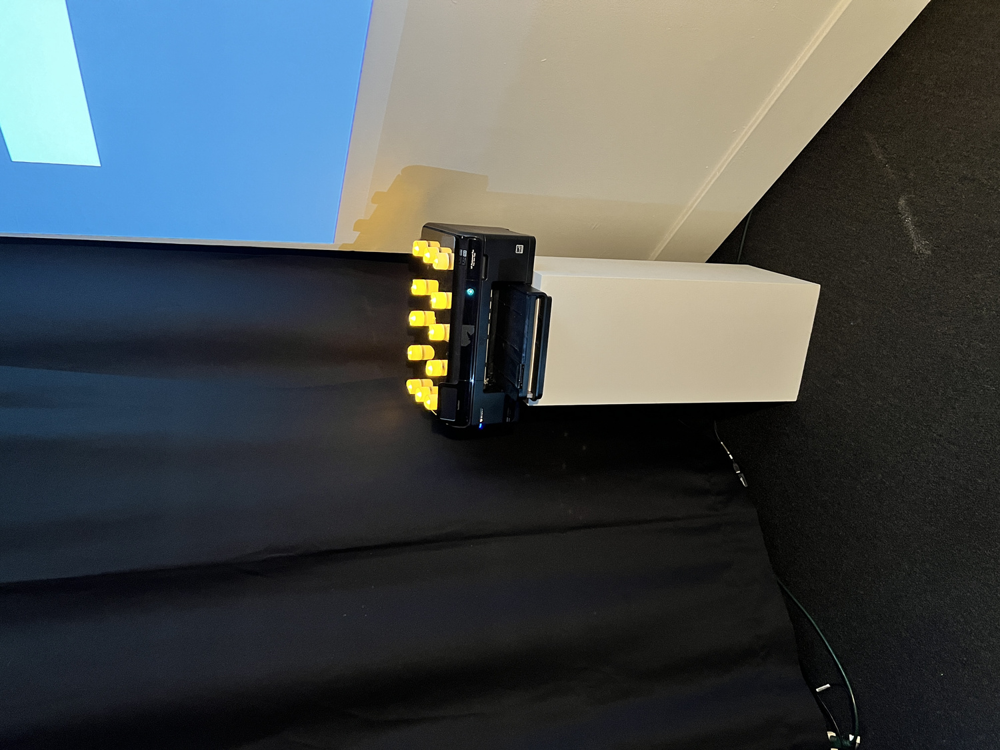

Deserve It

Deserve It begins with a chair. A screen. A form. Participants are asked: “Are you a threat?”, “Do you have family here?” - most questions a variation on “Do you think you deserve to stay?” As you respond, your answers scramble. The artist behind the desk performs your choices, silently, ritualistically. He is a migrant caught in a feedback loop - part mechanical Turk, part oracle, part sacrificed witness. The machine never says yes. It only says: try again.
Over six looping hours, Deserve It unfolds as a durational performance where audience members sit at a terminal and fill out a fictional, but emotionally true, immigration interface. Their inputs are absorbed and interpreted live by the artist, whose movements translate digital hesitation into bodily response. The piece never quite resolves, just as the migration journey never quite ends. Sometimes people stray. That’s welcome. They return to find a welcome screen. A home icon. A ghost of origin.

First performed at Gray Area in San Francisco, then remounted at Gallery-O-Rama, Deserve It is more than immersive theater - it is a reverse Turing test, a digital confession booth, a refusal of algorithmic neutrality. At its core, it asks: what does it mean to deserve a future? Inspired by cybernetics, Arab migration rituals, and the bureaucratic sublime, Deserve It critiques the cold violence of techno-administered borders - yet it does not despair. Instead, it absorbs, listens, and glitches. It makes space for pause. It turns the screen from a doom-scroll engine into a door. This is not a narrative. It is a system. Not a performance. A purgatory. Not a visa. A visitation.






